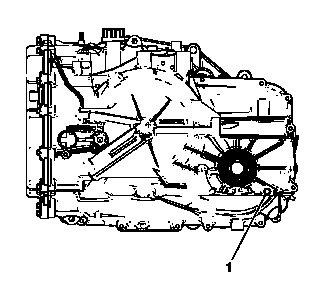

变速器油液位和状况的检查
此程序检查变速器油位，同时检查油液本身状况。
告诫：
只能使用 Dexron® VI 变速器油。未使用合适的变速器油可能导致变速器内部损坏。
注意:
确保变速器有足够的油液，以确保可安全启动车辆而不损坏变速器。车辆熄火且变速器油温度大约在20-25℃（68-77℉）之间时，必须有足够多的油从油位孔排出。一旦车辆起动，这能确保储油槽中有足够的油液注满各部件。
无机油尺油位检查程序
1.
起动发动机。
2.
踩下制动踏板并将换档杆挂到每个档位，且在每个档位停顿3秒钟。然后将换档杆挂回驻车档（P）。
3.
让发动机以500-800 转/分的转速怠速运行至少3分钟，从而使油液泡沫消散，使油位稳定。松开制动踏板。
注意:
如果变速器油温度读数不是所需温度，让车辆冷却或运行车辆直至变速器油温度达到合适值。如果油液温度低于规定范围，执行以下程序以使油液温度达到规定值。
在2档下驾驶车辆，直到油液温度达到规定值。
4.
保持发动机运行，通过驾驶员信息中心或者故障诊断仪观察变速器油温度（TFT）。
5.
用举升机举升车辆。发动机运行且换档杆处于驻车档时，车辆必须置于水平位置。

6.
车辆怠速运行时，拆下油位设置螺塞。排出所有油液。
机油油位螺塞（1）
•
如果油液稳定地流出，则等待直到油液开始滴落。
•
如果没有油液流出，则添加油液直到油液滴落。
7.
检查油液颜色。油液应为红色或深棕色。
•
如果油液颜色很深或发黑，还有烧焦味，则检查油液中是否有过多的金属微粒或其他碎屑。少量“摩擦”材料物质属“正常”情况。如果在油液中发现较大碎片和/或金属微粒，则冲洗油液冷却器和冷却器管路，然后彻底检修变速器。如果未发现变速器内部损坏迹象，则更换油液，修理油液冷却器并冲洗冷却器管路。
•
若油液呈现出絮状或乳液状或看起来像是被水污染，则表示发动机冷却液或水污染。参见
发动机冷却液/水进入变速器
。
8.
检查是否存在外部泄漏。参见
油液泄漏的诊断
。
9.
如果油液已更换，则复位变速器油寿命监测器（如适用）。
机油尺油位检查程序（如装备）
1.
将车辆停在水平路面上，施用驻车制动器并将换档杆挂驻车档（P）。起动发动机。
2.
踩下制动踏板并将换档杆挂到每个档位，且在每个档位停顿3秒钟。然后将换档杆挂回驻车档（P）。
3.
让发动机以500-800 转/分的转速怠速运行至少3分钟，从而使油液泡沫消散，使油位稳定。松开制动踏板。
4.
保持发动机运行，通过驾驶员信息中心或者故障诊断仪观察变速器油温度（TFT）。
注意:
•
如果变速器油温度读数不是所需温度，让车辆冷却或运行车辆直至变速器油温度达到合适值。如果油液温度低于规定范围，执行以下程序以使油液温度达到规定值。
•
当变速器油温度在85—95℃（185—203℉）之间时，检查变速器油位。当油液温度升高时，油位将升高，因此，必须确保变速器油温度为规定的温度。
在2档下驾驶车辆，直到油液温度达到规定值。
5.
发动机运行且换档杆处于驻车档时，车辆必须置于水平位置。
6.
拆下机油尺，并用干净的抹布或纸巾将其擦干净。
7.
检查油液颜色。油液应为红色或深棕色。
•
如果油液颜色很深或发黑，还有烧焦味，则检查油液中是否有过多的金属微粒或其他碎屑。少量“摩擦”材料物质属“正常”情况。如果在油液中发现较大碎片和/或金属微粒，则冲洗油液冷却器和冷却器管路，然后彻底检修变速器。如果未发现变速器内部损坏迹象，则更换油液，修理油液冷却器并冲洗冷却器管路。
•
若油液呈现出絮状或乳液状或看起来像是被水污染，则表示发动机冷却液或水污染。参见
发动机冷却液/水进入变速器
。
8.
安装机油尺。等待3秒钟然后再将其拆下。
注意:
务必检查油位至少两次。一致的读数对于保持正确的油位至关重要。如果读数不一致，则检查变速器通风口盖以确保其干净通畅。
注意:
无需使油位一直处于“MAX（最高）”标记处。在阴影线的任何区域内都是可接受的。
9.
检查机油尺两侧，并记录较低油位。
10.
再次安装和拆下机油尺以确认读数。
注意:
如果没有再次检查油位，切勿一次添加多于0.5品脱（0.25 升）的油液。一旦油液处于机油尺的锥形端，不需要多少油液便可将油位提升到阴影线区域。切勿过量加注。此外，如果油位过低，检查变速器是否泄漏。参见
油液泄漏的诊断
。
11.
如果油位不在阴影线区域内，且变速器温度为90℃（194℉），视情况添加或排出油液，使油位处于阴影线区域。如果油位过低，仅添加足够的油液以使油位处于阴影线区域。
12.
如果油位在可接受的范围内，则安装机油尺。
13.
如果油液已更换，则复位变速器油寿命监测器（如适用）。
油液状况检查
•
检查油液颜色。油液应为红色。正常使用时油液颜色也许会变成棕色，但这并不一定表示受到了污染。
注意:
如果油液颜色很深或发黑还有烧焦味，通常表示油液过热或者受到污染。
•
如果油液颜色很深或发黑并有烧焦味，检查油液是否有过多的金属微粒或其他碎屑，这表示变速器可能损坏。参见
路试
以确认变速器操作。如果没有发现其他状况，则更换变速器油。
•
若油液呈现出絮状或乳液状或看起来像是被水污染，则表示发动机冷却液或水污染。参见
发动机冷却液/水进入变速器
。